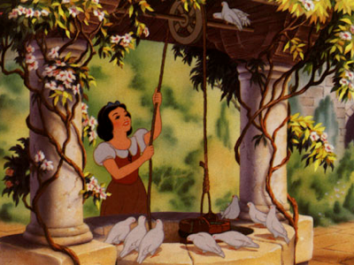
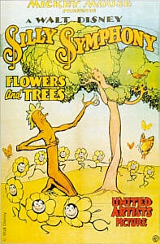
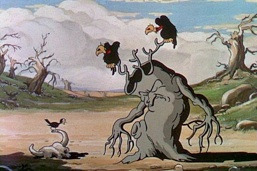
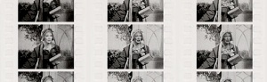
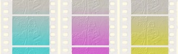
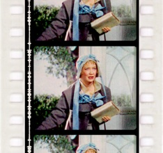

Successive Exposure and “Three-strip” Technicolor
Color is a factor that many modern consumers take for granted, but the early years of the development of color technology were a period of great innovation and creativity on the part of the engineers who invented these processes. Color is especially important for animation, for which the capacity to represent realistic situations is limited by the drawn image.
Many color processes came and went throughout the first 50 years of film technology, some of which included Kinemacolor, Primsacolor, Multicolor, and Cinecolor.1 When Technicolor modified its two-color techniques into a revolutionary three-color system, the goal of reaching truly realistic color schemes on the film screen started to become a reality, and every producer wanted to utilize the technique, including Disney. Disney and Technicolor founder Herbert Kalmus signed a contract giving Disney a five-year exclusive rights for five years to use the process, but this was shortened to one year by pressure from the other studios, who were not thrilled about the prospect of being left behind in the ashes of the two-color processes they were allowed to use.2
Disney shot the first short that utilized three-strip color with the Silly Symphony short Flowers and Trees. Scott Higgins quotes Kalmus in an article that details how Technicolor used animation as a tool to sell the product to other producers,

Filming Technologies
Three strips of color means more for the eye

Photo © Disney
1. Bob Gitt, “The History of Color Filming” (lecture, University of California, Los Angeles, CA, January 30, 2007).
2. Martin Hart, “Technicolor History 5,” Widescreen Museum, http://www.widescreenmuseum.com/oldcolor/technicolor5.htm (accessed January 30, 2007)
3. Scott Higgins, "Demonstrating three colour Technicolor: Early three-colour aesthetics and design" Film History 12, no. 4 (2000): 361.
4. Martin Hart, “Technicolor History 6,” Widescreen Museum, http://www.widescreenmuseum.com/oldcolor/technicolor6.htm (accessed January 30, 2007)
5. Martin Hart, “Technicolor History 8,” Widescreen Museum, http://www.widescreenmuseum.com/oldcolor/technicolor8.htm (accessed January 30, 2007)
“Printing of the dyed matrices is done on a special "blank" printing film. The blank is essentially a black and white film with special chemicals called "mordants" applied that control the absorption of the dyes. Before printing of the color dyes, the film sound track is duplicated onto the film and black frame lines are exposed onto the stock. From 1932 up until about 1945, the blank also received a 50% black and white duplicate of the green record. This increased apparent sharpness of the image and improved contrast..”5
“Producers were willing to admit they had been wrong about colour cartoons now that the colour cartoons were being held over for weeks, or even months and earning several times their costs, but they still began every conversation about colour in feature films with the question of costs.
I liked to confound them with the following reply. Do you remember the huge rainbow in Disney's Funny Bunnies? Do you remember the bunnies drawing the colours of the rainbow into their pails and splashing their paints on the Easter eggs? Don't you agree that it was marvelous entertainment? Now I will ask you this: How much more did it cost Mr. Disney to produce that entertainment than it would have in black and white?' The answer, of course, was that it could not have been done in black-and-white at any Cost. .”3
Flowers and Trees, The Three Little Pigs and all the other Technicolor shorts before Snow White were shot on the bulky three-strip camera, which shot three different strips of black and white negative film for three different color records (red, green and blue - in their negative form these are represented by their color opposites - cyan, magenta and yellow). The records were then recombined in the final print4:


(left) Poster for Flowers and Trees
(below) A scene from the film
Photos © Disney



(above) RGB and CYM color records for a single frame of film from Becky Sharp
(right) The final recombined record from the same frame.
Photo courtesy of the Widescreen Museum website
These processes created stunning images but were bulky and expensive due to the large camera and excessive amount of film it took to render a final image. So Disney worked with Kalmus to create a new method for still frame photography, called successive exposure photography. Basically it employed the same processes as outlined above, but each frame was shot on a single film strip different times for each color record:
The final step in the SEN process was to essentially “print” the dyed matrix prints onto the blank, much like a stamp. The blank pulls in the dye one color at a time, creating a final combined image:
Hart explains the next step of the process, the printing of a black and white “blank” on his site devoted to Technicolor:


The processed negative is step-printed onto three different strips of film, called matrix films, one for each color record. Dyes were then added to these prints - yellow dye for the red record, cyan dye for the red record and magenta dye for the green record:
The result of this process was a dye transferred Imbitition Technicolor print. The value of this kind of print is akin to gold bullion in the world of restoration, as will be detailed in the restoration section of the site. The dyes resist fading at a remarkable level, making them by far the best color records for those who work to restore these films many, many years later.